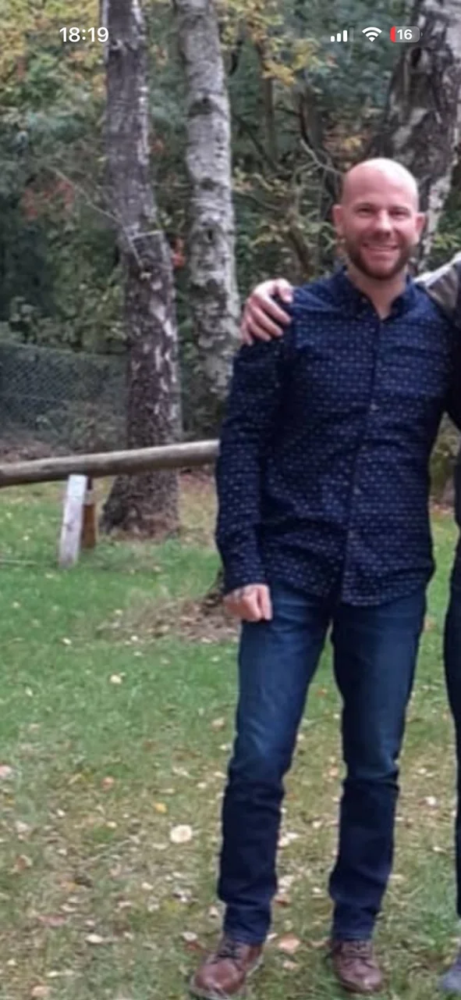
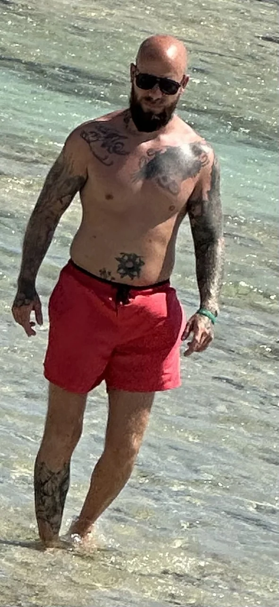
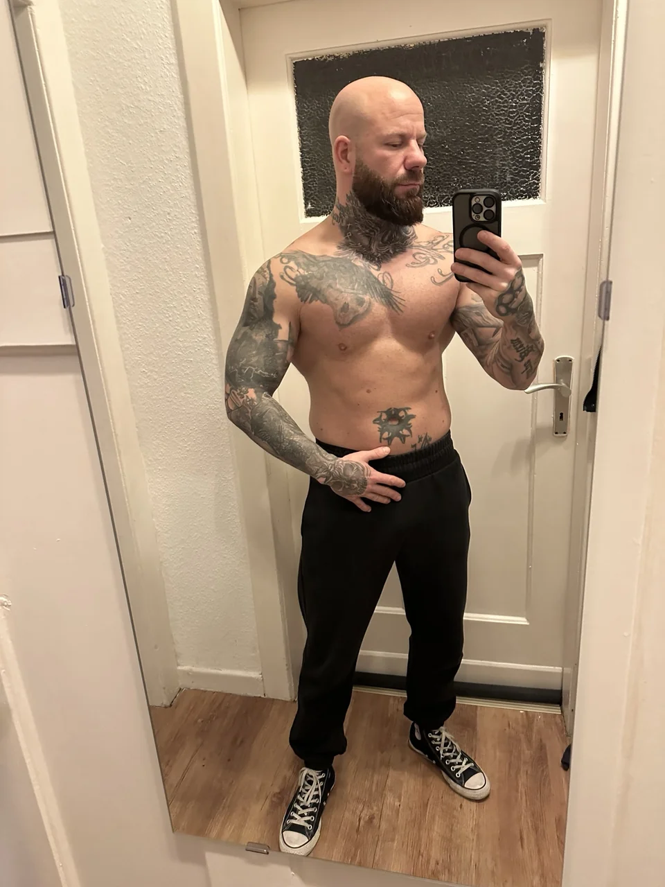
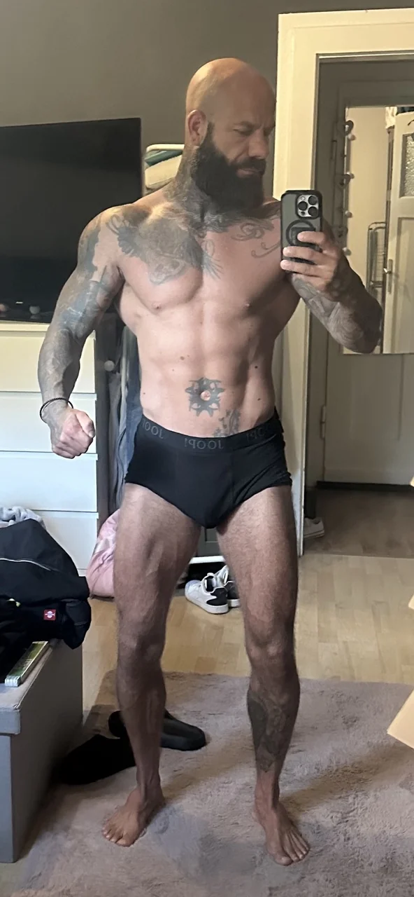
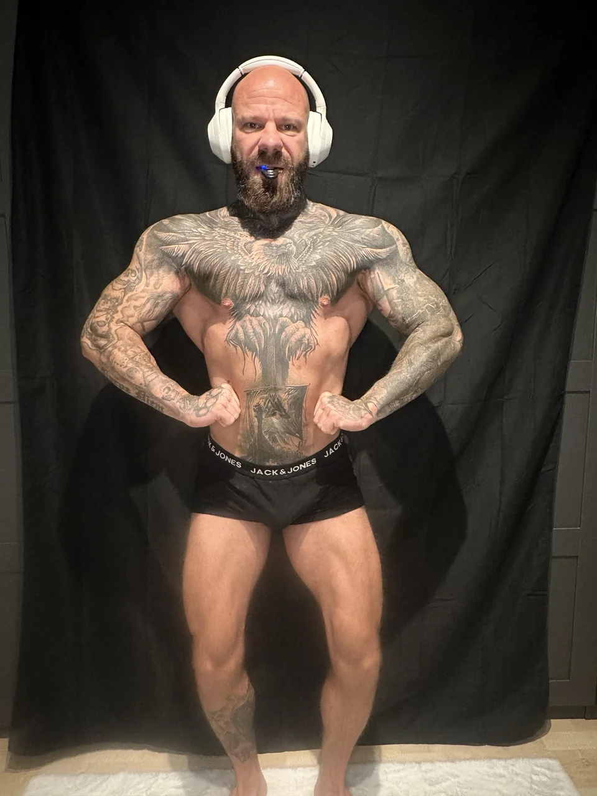

Der Mensch hinter IRON DAVE
Bodybuilder.
Elektriker.
Dave.
Mit 18 wog ich etwa 52 kg. Heute verbinde ich meinen Vollzeitjob als Elektriker mit Bodybuilding. Mein aktuelles Ziel: 90 kg.
Im Gym.
Danach auf der Arbeit.
Mein Weg war
keine gerade Linie.
Mein Alltag beginnt sehr früh. Gegen 03:45 Uhr stehe ich bereits im Gym. Danach geht es in meinen Vollzeitjob als Elektriker. Training, Essen, Arbeit und Erholung unter einen Hut zu bekommen, gehört für mich zum normalen Leben.
Mit 18 wog ich etwa 52 kg. Die Phase mit ungefähr 67 kg war eine spätere Station meines Weges. Ich war sehr dünn, habe zwischenzeitlich meine Form verloren und mich wieder zurückgearbeitet. Die Fotos auf dieser Seite zeigen unterschiedliche Phasen. Fortschritte, Umwege und neue Anläufe gehören zu meiner Geschichte.
Deshalb weiß ich, dass ein Trainingsplan allein noch keine Veränderung macht. Er muss zu deinem Alltag passen. Du brauchst eine Ernährung, die du umsetzen kannst, und einen verständlichen Blick darauf, wie du dich entwickelst. Wenn etwas nicht funktioniert, schauen wir hin und passen bei Bedarf an.
Fünf Bilder. Mein Weg.
Nach links wischen → · Zum Vergrößern antippen





Fünf Stationen meiner späteren Entwicklung. Mein Weg begann bereits mit 18 und etwa 52 kg. Die Fotos zeigen meinen eigenen Weg und sind keine Zusage für bestimmte Ergebnisse im Coaching.
Meine Philosophie
MALOCHEN.
EISEN.
DISZIPLIN.
Für mich beschreibt das den Alltag hinter dem Training: arbeiten, planen, trainieren und die eigene Entwicklung im Blick behalten.
Genau dabei möchte ich dich im Coaching unterstützen. Mein Coaching richtet sich an Männer ab 30 – mit oder ohne TRT. Auch Männer, die Hormone oder Peptide nutzen, können sich an mich wenden. Training, Ernährung und deine tatsächliche Entwicklung bilden die Grundlage. Die vereinbarten Leistungen besprechen wir vor dem Start.
Ich trainiere gegen 03:45 Uhr, weil dieser Rhythmus für mich passt. Für dich kann das nach Feierabend oder am Wochenende sein. Entscheidend ist, dass dein Plan zu den Möglichkeiten passt, die du regelmäßig nutzen kannst.
Mein persönliches Projekt heißt aktuell Road to 90 kg. Ich nehme dich bei Training, Ernährung und Form-Updates mit – auch in den Phasen, in denen nicht alles so läuft wie erhofft.
Zur Road to 90 kg →Dein nächster Schritt
Lass uns über
dein Ziel sprechen.
15 Minuten kostenlos kennenlernen. Wir klären, welche Unterstützung zu dir und deinem Alltag passt.